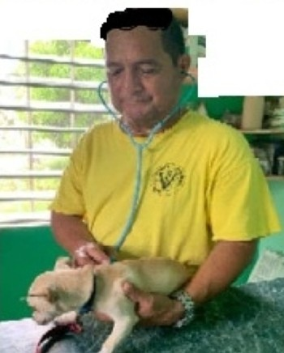

Compassionate Care, Always
At Belmopan Veterinary Services, we offer expert veterinary care with a personal touch. From routine check-ups to our respectful crematorium services, your pet's well-being is our top priority. Trust us to provide the compassionate care your furry family members deserve.
Vision Statement
To be the leading veterinary / cremation services in the Belmopan area and outstanding pet care service.
Our History
Dr. Jorge Alpuche with over 30 years experience in Veterinary Services and Pet Care.
Meet the Vet

Dr. Jorge Alpuche
Veterinary Surgeon
A Day at Belmopan Veterinary / Crematorium Services
Take a behind-the-scenes look at the daily operations of Belmopan Veterinary / Crematorium Services, where precision and care meet to deliver high-quality medical services.